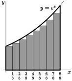

Example 1.1.2. Computing an area exactly.
Recall that we wish to compute the area of
\begin{gather*}
\big\{\ (x,y)\ \big|\ 0\le y\le e^x,\ 0\le x\le 1\ \big\}
\end{gather*}
and that our strategy is to approximate this area by the area of a union of a large number of very thin rectangles, and then take the limit as the number of rectangles goes to infinity. In Example 1.1.1, we used just four rectangles. Now we’ll consider a general number of rectangles, that we’ll call \(n\text{.}\) Then we’ll take the limit \(n\rightarrow\infty\text{.}\) So
-
pick a natural number \(n\) and
-
subdivide the interval \(0\le x\le 1\) into \(n\) equal subintervals each of width \(\frac{1}{n}\text{,}\) and
-
subdivide the area of interest into corresponding thin strips, as in the figure below.
The area we want is exactly the sum of the areas of all of the thin strips.
Each of these strips is almost, but not quite, a rectangle. As in Example 1.1.1, the only problem is that the top is not horizontal. So we approximate each strip by a rectangle, just by levelling off the top. Again, we have to make a choice — at what height do we level off the top?
Consider, for example, the leftmost strip. On this strip, \(x\) runs from \(0\) to \(\frac{1}{n}\text{.}\) As \(x\) runs from \(0\) to \(\frac{1}{n}\text{,}\) the height \(y\) runs from \(e^0\) to \(e^{\frac{1}{n}}\text{.}\) It would be reasonable to choose the height of the approximating rectangle to be somewhere between \(e^0\) and \(e^{\frac{1}{n}}\text{.}\) Which height should we choose?
Well, as we said in Example 1.1.1, it doesn’t matter. We shall shortly take the limit \(n\rightarrow\infty\) and, in that limit, all of those different choices give exactly the same final answer. We won’t justify that statement in this example, but there will be an (optional) section shortly that provides the justification. For this example we just, arbitrarily, choose the height of each rectangle to be the height of the graph \(y=e^x\) at the smallest value of \(x\) in the corresponding strip . The figure on the left below shows the approximating rectangles when \(n=4\) and the figure on the right shows the approximating rectangles when \(n=8\text{.}\)
4
Notice that since \(e^x\) is an increasing function, this choice of heights means that each of our rectangles is smaller than the strip it came from.


Now we compute the approximating area when there are \(n\) strips.
-
We approximate the leftmost strip by a rectangle of height \(e^0\text{.}\) All of the rectangles have width \(\frac{1}{n}\text{.}\) So the leftmost rectangle has area \(\frac{1}{n}e^0\text{.}\)
-
On strip number \(2\text{,}\) \(x\) runs from \(\frac{1}{n}\) to \(\frac{2}{n}\text{.}\) So the smallest value of \(x\) on strip number \(2\) is \(\frac{1}{n}\text{,}\) and we approximate strip number \(2\) by a rectangle of height \(e^{\frac{1}{n}}\) and hence of area \(\frac{1}{n}e^{\frac{1}{n}} \text{.}\)
-
And so on.
-
On the last strip, \(x\) runs from \(\frac{n-1}{n}\) to \(\frac{n}{n}=1\text{.}\) So the smallest value of \(x\) on the last strip is \(\frac{n-1}{n}\text{,}\) and we approximate the last strip by a rectangle of height \(e^{\frac{(n-1)}{n}}\) and hence of area \(\frac{1}{n}e^{\frac{(n-1)}{n}} \text{.}\)
The total area of all of the approximating rectangles is
\begin{align*}
\text{Total approximating area} &= \frac{1}{n}e^0
+ \frac{1}{n}e^{\frac{1}{n}}
+ \frac{1}{n}e^{\frac{2}{n}}
+ \frac{1}{n}e^{\frac{3}{n}}
+ \cdots
+ \frac{1}{n}e^{\frac{(n-1)}{n}}\\
&= \frac{1}{n}\Big( 1+ e^{\frac{1}{n}} +e^{\frac{2}{n}}+e^{\frac{3}{n}}
+\cdots+ e^{\frac{(n-1)}{n}}\Big)
\end{align*}
Now the sum in the brackets might look a little intimidating because of all the exponentials, but it actually has a pretty simple structure that can be easily seen if we rename \(e^{\frac{1}{n}}=r\text{.}\) Then
-
the first term is 1 = \(r^0\) and
-
the second term is \(e^{\frac{1}{n}}=r^1\) and
-
the third term is \(e^{\frac{2}{n}}=r^2\) and
-
the fourth term is \(e^{\frac{3}{n}}=r^3\) and
-
and so on and
-
the last term is \(e^{\frac{(n-1)}{n}}=r^{n-1}\text{.}\)
So
\begin{align*}
\text{Total approximating area}
&= \frac{1}{n}\left( 1+ r +r^2 +\cdots+ r^{n-1}\right)
\end{align*}
The sum in brackets is known as a geometric sum and satisfies a nice simple formula:
Equation 1.1.3. Geometric sum.
\begin{gather*}
1+ r +r^2 +\cdots+ r^{n-1} =\frac{r^n-1}{r-1} \qquad\text{provided $r\ne 1$}
\end{gather*}
The derivation of the above formula is not too difficult. So let’s derive it in a little aside.
Aside: Geometric sum.
Now we can go back to our area approximation armed with the above result about geometric sums.
\begin{align*}
\text{Total approximating area}
&= \frac{1}{n}\left( 1+ r +r^2 +\cdots+ r^{n-1}\right)\\
&= \frac{1}{n} \frac{r^n-1}{r-1} \qquad\qquad \text{remember that $r=e^{1/n}$}\\
&= \frac{1}{n} \frac{e^{n/n} - 1}{e^{1/n}-1}\\
&= \frac{1}{n} \frac{e - 1}{e^{1/n}-1}
\end{align*}
To get the exact area all we need to do is make the approximation better and better by taking the limit \(n\rightarrow \infty\text{.}\) The limit will look more familiar if we rename \(\frac{1}{n}\) to \(X\text{.}\) As \(n\) tends to infinity, \(X\) tends to \(0\text{,}\) so
5
We haven’t proved that this will give us the exact area, but it should be clear that taking this limit will give us a lower bound on the area. To complete things rigorously we also need an upper bound and the squeeze theorem. We do this in the next optional subsection.
\begin{align*}
\text{Area}&=\lim_{n\rightarrow\infty} \frac{1}{n}\ \frac{e-1}{e^{1/n}-1}\\
&=(e-1)\lim_{n\rightarrow\infty} \frac{1/n}{e^{1/n}-1}\\
&=(e-1)\lim_{X\rightarrow 0} \frac{X}{e^X-1}
&\text{(with $X=\frac{1}{n}$)}
\end{align*}
Examining this limit we see that both numerator and denominator tend to zero as \(X\to 0\text{,}\) and so we cannot evaluate this limit by computing the limits of the numerator and denominator separately and then dividing the results. Despite this, the limit is not too hard to evaluate; here we give two ways:
-
Perhaps the easiest way to compute the limit is by using l’Hôpital’s rule. Since both numerator and denominator go to zero, this is a \(\frac00\) indeterminate form. Thus
6
If you do not recall L’Hôpital’s rule and indeterminate forms then we recommend you skim over your differential calculus notes on the topic.\begin{align*} \lim_{X\rightarrow 0} \frac{X}{e^X-1} &=\lim_{X\rightarrow 0} \frac{\diff{}{X}X}{\diff{}{X}(e^X-1)} =\lim_{X\rightarrow 0} \frac{1}{e^X}=1 \end{align*} -
Another wayto evaluate the same limit is to observe that it can be massaged into the form of the limit definition of the derivative. First notice that
7
Say if you don’t recall l’Hôpital’s rule and have not had time to revise it.\begin{align*} \lim_{X\rightarrow 0} \frac{X}{e^X-1} &= \left[\lim_{X\rightarrow 0} \frac{e^X-1}{X} \right]^{-1} \end{align*}provided this second limit exists and is nonzero. This second limit should look a little familiar:8
\begin{align*} \lim_{X\rightarrow 0} \frac{e^X-1}{X} &= \lim_{X\rightarrow 0} \frac{e^X-e^0}{X-0} \end{align*}which is just the definition of the derivative of \(e^x\) at \(x=0\text{.}\) Hence we have\begin{align*} \lim_{X\rightarrow 0} \frac{X}{e^X-1} &=\left[\lim_{X\rightarrow 0}\, \frac{e^X-e^0}{X-0} \right]^{-1}\\ &=\left[\diff{}{X}e^X\Big|_{X=0} \right]^{-1}\\ &=\left[e^X\big|_{X=0}\right]^{-1}\\ &=1 \end{align*}
So, after this short aside into limits, we may now conclude that
\begin{align*}
\text{Area} &=(e-1)\lim_{X\rightarrow 0} \frac{X}{e^X-1}\\
&=e-1
\end{align*}